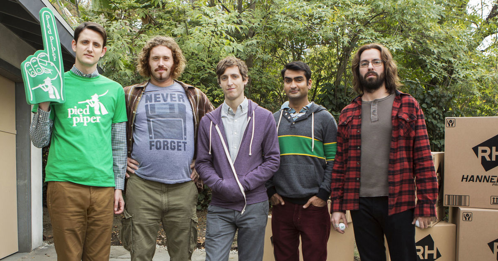

About Me

Over his career as a programmer, Dinesh has brought his talents to many promising startups. He briefly served as CEO of PiperChat, Pied Piper’s video chat offshoot. Following Hooli’s acquisition of PiperChat, Dinesh gracefully parted ways with the company and thinks it’s best not to talk about it too much anymore. Dinesh has also contributed to a pioneering image classification project at Periscope, scraping the internet of inappropriate content. He doesn’t like to talk about that too much, either.
Prior to working in Silicon Valley, Dinesh received honors degrees in information theory and computer science from Yale, Caltech, and Oxford. He has published several books on advanced Java tools. (Signed copies available upon request.)
Born in Karachi, Dinesh became a naturalized citizen in 2010, unlike Gilfoyle, who was an illegal Canadian alien until quite recently and is a piece of garbage.
When he's not coding or kicking it with his boys, Dinesh enjoys online solitaire and the occasional karaoke session. His hobbies include both watching rugby and the wearing of its signature shirts, libertarian politics, and being stared at suspiciously during air travel.